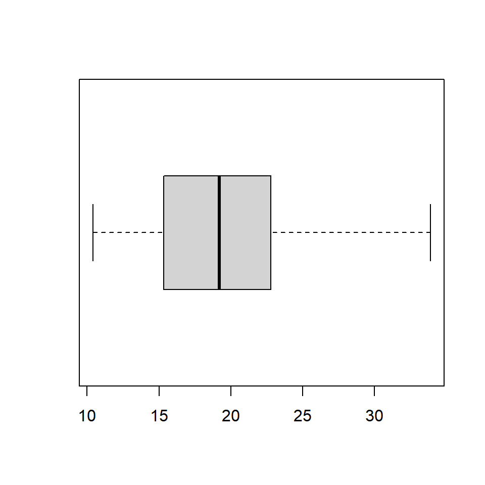
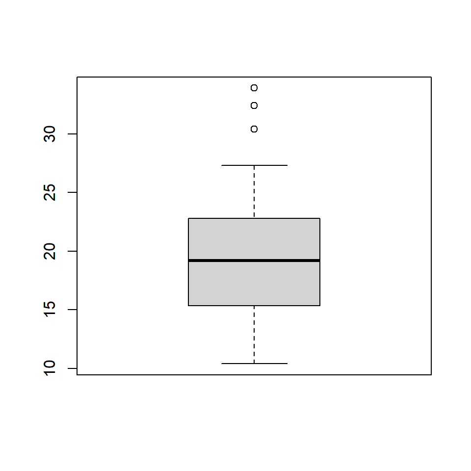
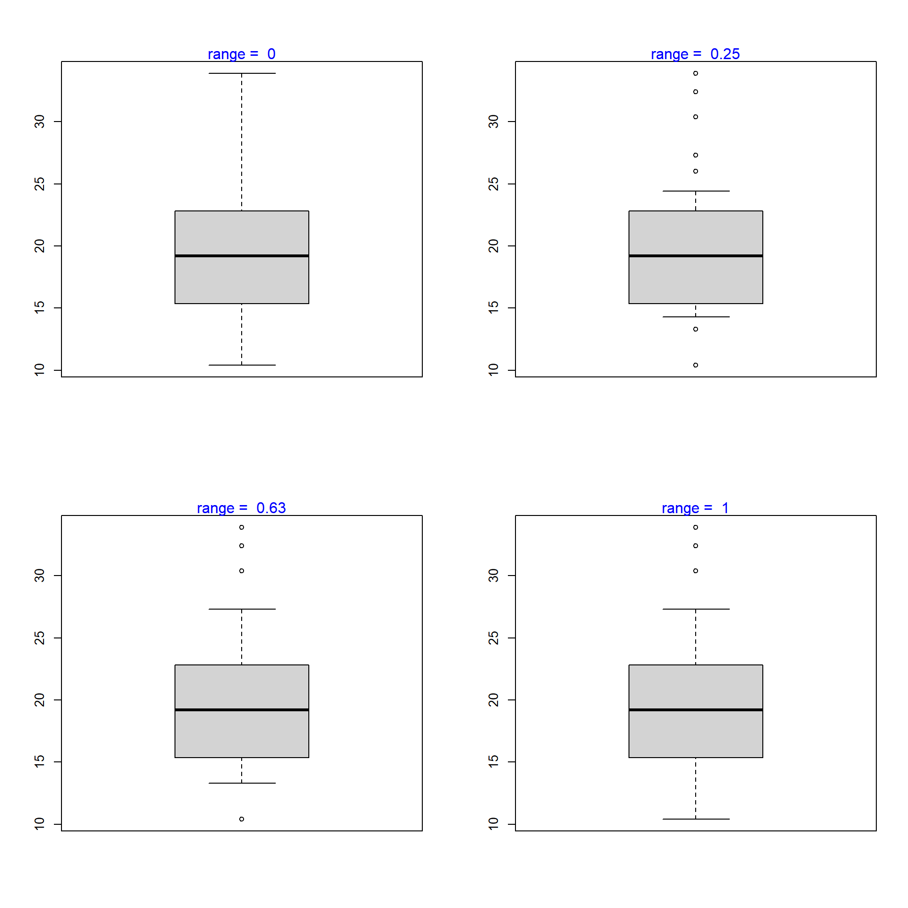
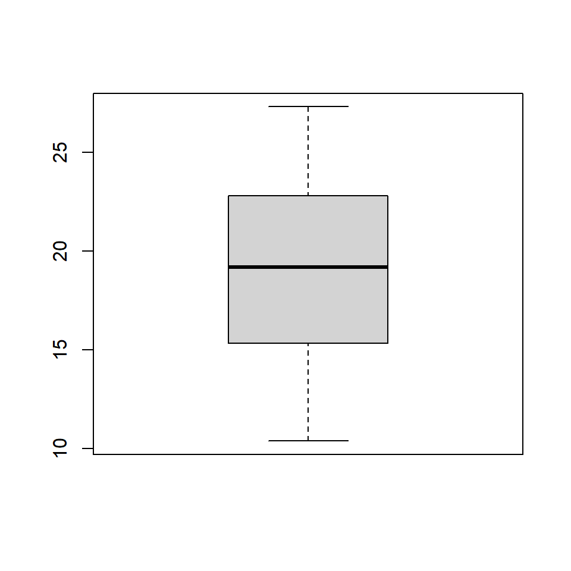
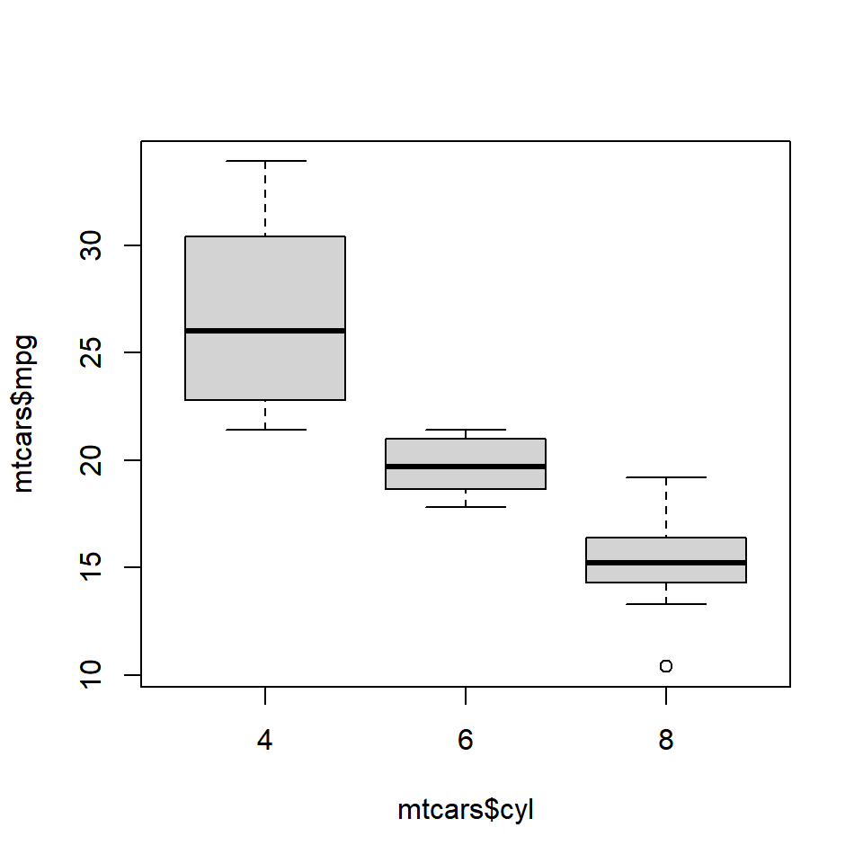
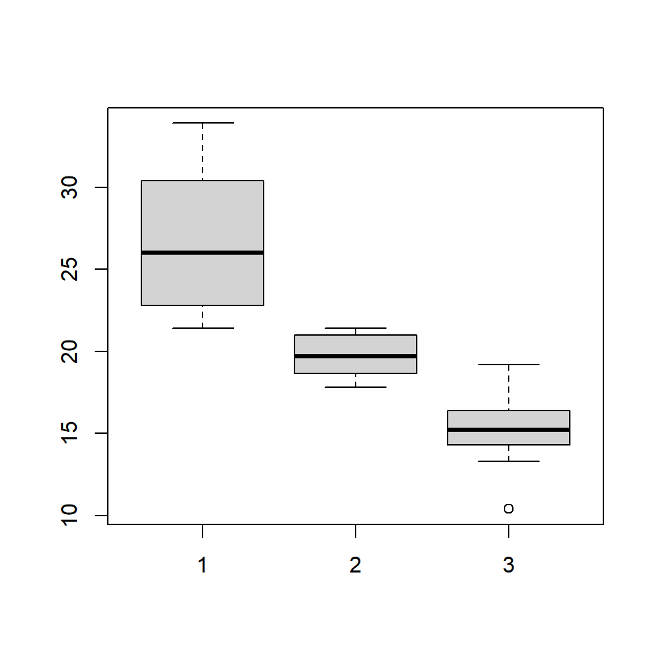

Chapter 6 Box Plots
6.1 Introduction
In this chapter, we will learn to
- create univariate/multivariate box plots
- interpret box plots
- create horizontal box plots
- detect outliers
- modify box color
- use formula to compare distributions of different variables
- use notches to compare medians
6.2 Box Plot
The box plot is a standardized way of displaying the distribution of data based on the five number summary: minimum, first quartile, median, third quartile, and maximum. Box plots are useful for detecting outliers and for comparing distributions. It shows the shape, central tendancy and variability of the data.
6.2.1 Structure
A boxplot splits the data set into quartiles. The body of the boxplot consists of a “box” (hence, the name), which goes from the first quartile (Q1) to the third quartile (Q3). Within the box, a vertical line is drawn at the Q2, the median of the data set. Two horizontal lines, called whiskers, extend from the front and back of the box. The front whisker goes from Q1 to the smallest non-outlier in the data set, and the back whisker goes from Q3 to the largest non-outlier. If the data set includes one or more outliers, they are plotted separately as points on the chart.
6.3 Univariate Box Plot
6.3.1 Basic Plot
Let us begin by creating a basic box plot. We will use the boxplot() function and specify the data.
6.3.2 Horizontal Box Plot
Use the horizontal argument in the boxplot() function to create a horizontal box plot.

6.3.3 Color
Let us add some color to the boxplot. Use the col argument to specify a color for the plot.

6.3.4 Border Color
We can specify a separate color for the border of the box in the boxplot. To modify the border color, use the border argument.
6.3.5 Range
The range argument determines how far the plot whiskers extend out from the box. If range is positive, the whiskers extend to the most extreme data point which is no more than range times the interquartile range from the box. A value of zero causes the whiskers to extend to the data extremes.
Let us set the value of range to 0 and observe the plot.

In the below plot, we set the value of range to 1.

Let us observe how the plot appears as we change the value of range from 0 to 1.

6.3.6 Outline
The outliers in the plot are not drawn if the outline argument is set to FALSE. The default value is TRUE.

The below plot displays how the plot changes with the values set for outline:
6.3.7 Varwidth
If the varwidth argument is set to TRUE, the boxes are drawn with widths proportional to the square-roots of the number of observations in the groups.

6.4 Bivariate/Multivariate Box Plot
As we said in the introduction, box plots can be used to compare distributions of several variables. Let us use the mtcars data set and compare the distribution of Miles Per Gallon (mpg) for automobiles with different number of cylinders (cyl). We will do this by specifying a formula as shown in the below example.

We use the formula when we are comparing the distribution of a continuous variable across different levels of a categorical variable. If we want to compare the distributions without using a categorical variable, we need to specify the variable separately in the boxplot() function. Below is an illustration of this method. We will split the mpg data using the split() function and plot them separately. The split() function splits a continuous variable based on the levels of a categorical variable.
mpg_split <- split(mtcars$mpg, mtcars$cyl)
mpg_split
## $`4`
## [1] 22.8 24.4 22.8 32.4 30.4 33.9 21.5 27.3 26.0 30.4 21.4
##
## $`6`
## [1] 21.0 21.0 21.4 18.1 19.2 17.8 19.7
##
## $`8`
## [1] 18.7 14.3 16.4 17.3 15.2 10.4 10.4 14.7 15.5 15.2 13.3 19.2 15.8 15.0
mpg_4 <- mpg_split$`4`
mpg_6 <- mpg_split$`6`
mpg_8 <- mpg_split$`8`
boxplot(mpg_4, mpg_6, mpg_8)
The same plot can be created in two ways. If you are comparing the distribution of a continuous variable for the different levels of a categorical variable, use the formula. If you are comparing distribution of independent variables, specify all the variablels in the boxplot() function.
6.4.1 Color
Let us add some color to the plot. We can specify as many colors as the boxes or we can specify the same color for all of them. Below are two examples where we specify the same color in the first one and different colors in the second one.
6.4.2 Compare Medians
If we want to test whether the medians of the different groups differ, we can use the notch argument and set it to TRUE. A notch is drawn in each side of the boxes and if the notches of the plots do not overlap, it is strong evidence that the medians differ.
We will use a different data set for this example. Download the hsb2 data from UCLA website and compare the distribution of reading score (read) for males and females (female).
hsb <- read.table('https://stats.idre.ucla.edu/wp-content/uploads/2016/02/hsb2-2.csv', header=T, sep=",")
boxplot(hsb$read ~ hsb$female, notch = TRUE,
col = c('red', 'blue'))Since the notches overlap, there is no strong evidence that the medians differ.
6.5 Putting it all together
Let us conclude by adding a title and axis labels to the box plot.
boxplot(mtcars$mpg ~ mtcars$cyl, range = 1, outline = TRUE,
horizontal = TRUE, col = c('red', 'blue', 'yellow'),
main = 'Miles Per Gallon by Cylinders',
ylab = 'Number of Cylinders', xlab = 'Miles Per Gallon',
names = c('Four', 'Six', 'Eight'))